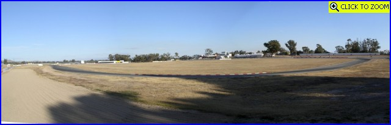
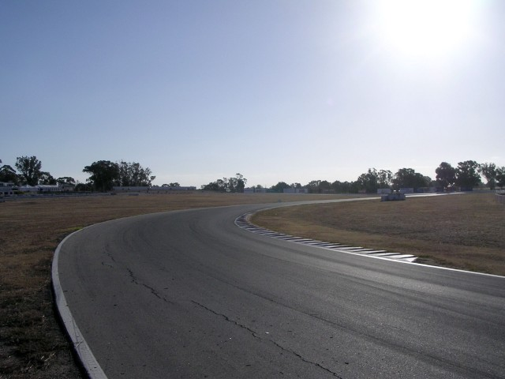
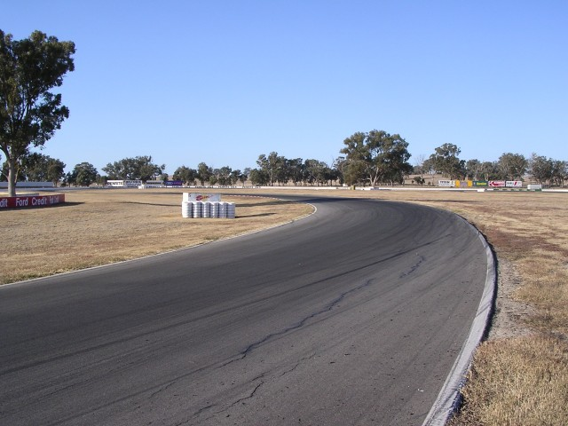
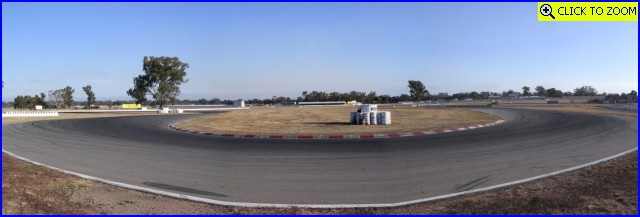
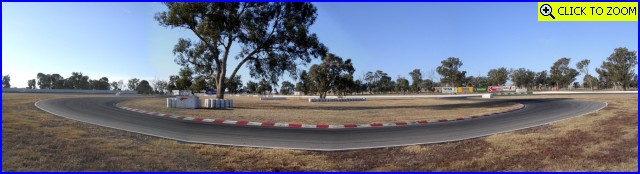
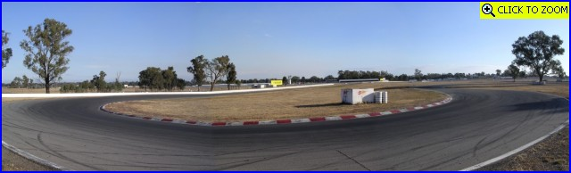
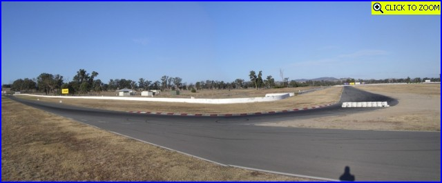

Numbers and arrows on the map represent the location as direction of where the photographs were taken. Click on hyperlinks above to view the photographs.
Winton - Turns 2 to 8
|| Contents || Start - Esses - Turn 1 | Turns 2 to 8 | Turns 9 & 10 / Pits || Home ||
Numbers and arrows on the map represent the location as direction of where the
photographs were taken. Click on hyperlinks above to view the photographs.
Return to racingcircuits.net's Photo Archive Main Index

09 - Turn 2. [Click
here to zoom in]

10 - Turn 3 (The Sweeper), looking back to the corner entry.

11 - Turn 3 Exit.

12 - Turn 5, from right to left. [Click here to zoom in]

13 - Turn 6, from left to right. [Click here to zoom in]

14 - Turn 7, from right to left. [Click here to zoom in]

15 - Turn 8, coming from left. The short circuit link road continues
straight on to the lower right . [Click
here to zoom in]
Photographs and Text ©Neil Fackerell. Reproduced here with kind permission.